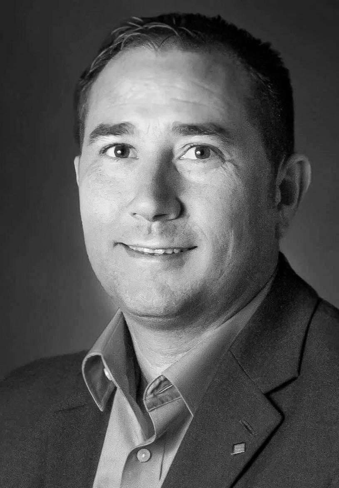
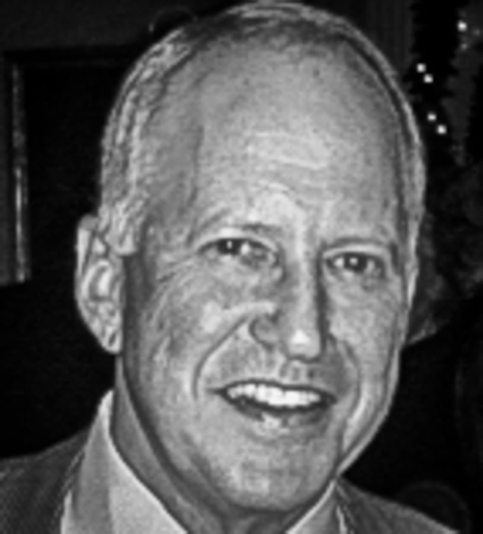

Best AI Website MakerAt North Country Holdings, we understand that business owners have multiple options when selling their companies. We set ourselves apart from traditional private equity, externally funded searchers, and strategic buyers through the following strengths:
Operational Expertise: Our team has funded, operated, and successfully exited multiple businesses. We bring seasoned, hands-on experience to elevate your enterprise.
Buy-and-Build Philosophy: We are committed to acquiring and growing businesses with a multi-decade horizon through organic and inorganic growth.
Self-Funded Independence: Our equity is principally sourced internally, granting us the freedom to make decisions with a long-term view, prioritizing sustainable growth over short-term gains.
Legacy-Driven Approach: We strive to preserve and amplify a founder’s vision, partnering closely with existing teams to ensure a seamless continuation of your legacy.
Aaron co-founded NCH after nearly a decade helping entrepreneurs grow and scale their businesses. Before NCH, he led private investments for a single-family office and worked at ZS Fund and Goldman Sachs. With a hands-on approach, Aaron is passionate about partnering with owners and management teams to fuel growth through acquisitions, operational improvements, and other strategic initiatives.
Aaron has a B.A. from Hamilton College and an M.B.A. from Columbia Business School.
Before co-founding NCH, Ian invested in public and private companies for 15 years at firms including Citadel, Bridger Capital, Great Point Partners, and Versant Ventures.
Prior to his investing career, he spent eight years in general management, building businesses and leading teams at Procter & Gamble and Medtronic.
Ian has a B.S. from Miami University and an M.B.A. from Harvard Business School.


Best AI Website Maker